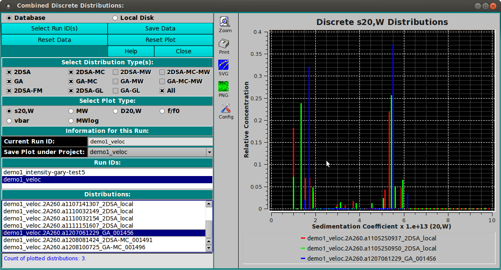

UltraScan Discrete Distributions Combined Plots:
To combine model distributions from multiple datasets (either from
different cells of the same run or from different runs), use
"Combine Discrete Distributions" from the Utilities menu. This will
allow you to compare bar plots of distributions from different cells
to each other.
Distribution plots present relative concentration (Y) for X points
where the "X" type may be sedimentation coefficent, molecular weight,
diffusion coefficient, frictional ratio or vbar (specific density).
Vertical bars are computed at every 2% mark of the X range.

-
Database Check this radio button to indicate that
distribution data to be selected is in the database.
-
Local Disk Check this radio button to indicate that
distribution data to be selected is on local disk file systems.
-
Select Run ID(s) Click on this button to open a
Run ID Select Dialog
in which one or more run IDs may be selected from which
distribution data files can be taken.
-
Save Data Save combined discrete distribution plots and
data to a local data file and, if input source so indicates,
to the database.
-
Reset Data Clear all data, lists and plots. To choose runs
and distributions, a new set of Select Run ID(s) selections must
be made.
-
Reset Plot Clear all plots. Data is still saved, so
a new set of plots can be created by simply selecting runs
and distributions (models).
-
Help Display detailed DDist_Combine help.
-
Close Close this application.
-
Select Distribution Type(s): Check one or more of the
check-box options below this banner to filter the list of
Distributions (see below).
-
Select Plot Type: Select one of the options below this
banner to specify the "X" type of the combined distribution plot.
-
Current Run ID: The read-only text to the right of this
label indicates the currently selected run.
-
Save Plot under Project: The name shown to the right of this
label specifies the project subdirectory under which the combination
is to be saved. By default, the name shown is the first run
selected for plotting, but this can be changed by the user to any
listed name. If "All" is selected, plot copies will be saved to all
of the component run IDs.
-
Run IDs: The list below shows all runs selected in
Select Run ID(s) dialogs. Click on a list line to reveal the
distribution (model) choices for the run.
-
Distributions: The list below shows the distributions for
the currently selected run. Click on a model line to have its
bar plot added to the combined plot.
 Manual
Manual